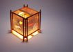

早上八点多钟醒来，没有洗漱就坐到桌前（我很喜欢这样，好象思维是以原始和真实面对自己的，并且思维不是太活跃，有点颓废。）打开音响和电脑，与其发楞吹风不如做点什么，翻看收藏夹里的文件，张爱玲的《红玫瑰与白玫瑰》印入我的视线中，什么时候开始文学小说都上了网站，不用为了买书来回奔波。我尤其喜欢《红》中的那几段场景：
......这样又过了两个礼拜，天气骤然暖了，他没穿大衣出去，后来下了两点雨，又觉寒飕飕的，他在午饭的时候赶回来拿大衣，大衣原是挂在穿堂里的衣架上的，却看不见。他寻了半日，着急起来，见起坐间的房门虚掩着，便推门进去，一眼看见他的大衣钩在墙上一张油画的画框上，娇蕊便坐在图画下的沙发上，静静的点着支香烟吸。振保吃了一惊，连忙退出门去，闪身在一边，忍不住又朝里看了一眼。原来娇蕊并不在抽烟，沙发的扶手上放着只烟灰盘子，她擦亮了火柴，点上一段吸残的烟，看着它烧，缓缓烧到她手指上，烫着了手，她抛掉了，把手送到嘴跟前吹一吹，仿佛很满意似的。他认得那景泰蓝的烟灰盘子就是他屋里那只。......
......最后他找到了相当的话，他努力弓起膝盖，想使她抬起身来，说道：“娇蕊，你要是爱我的，就不能不替我着想。我不能叫我母亲伤心。她的看法同我们不同，但是我们不能不顾到她，她就只依靠我一个人。社会上是决不肯原谅我的——士洪到底是我的朋友。我们的爱只能是朋友的爱。以前都是我的错，我对不起你。可是现在，不告诉我就写信给他，那是你的错了。……娇蕊，你看怎样，等他来了，你就说是同他闹着玩的，不过是哄他早点回来。他肯相信的，如果他愿意相信。”......
......振保一晚上都没睡好，清晨补了一觉，朦胧中似乎又有人趴在他身上哭泣，先还当是梦魇，后来知道是娇蕊，她又来了，大约已经哭了不少时。这女人的心身的温暖覆在他上面像一床软缎面子的鸭绒被，他悠悠地出了汗，觉得一种情感上的奢侈。......
...... 振保看着她，自己当时并不知道他心头的感觉是难堪的妒忌。娇蕊道：“你呢？你好么？”振保想把他的完满幸福的生活归纳在两句简单的话里，正在斟酌字句，抬起头，在公共汽车司机人座右突出的小镜子里，看见他自己的脸，很平静，但是因为车身的嗒嗒摇动，镜子里的脸也跟着颤抖不定，非常奇异的一种心平气和的颤抖，像有人在他脸上轻轻推拿似的。忽然，他的脸真的抖了起来，在镜子里，他看见他的眼泪滔滔流下来，为什么，他也不知道。在这一类的会晤里，如果必须有人哭泣，那应当是她。这完全不对，然而他竟不能止住自己。应当是她哭，由他来安慰她的。她也并不安慰他，只是沉默着，半晌，说：“你是这里下车罢？”......

想到音乐歌曲也上了网络，只要你的网络传输速度够快，喜欢什么去下载好了。这样既便捷又在经济上有所节约，这个世界将一切可以“快餐形式”出现的事物都快餐化了，最让人悲哀的是快餐感情！不知道人们将时间和精力都用在什么上面？然而，我却更喜欢将CD和书籍捧在手上的那种真实感觉，可以反复摩挲把玩，可以信手拈来，可以有很多购买和收藏的乐趣。
No Responses to “寂寞咖啡之6月16日”
Leave A Reply
存档只读，评论已关闭。